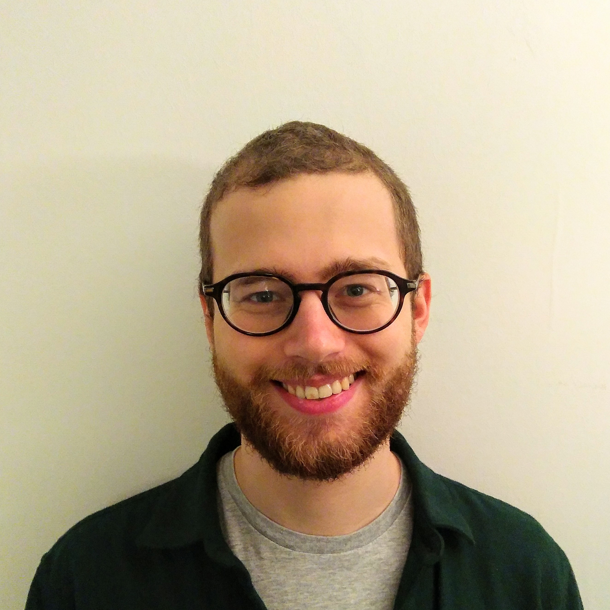

I am a postdoctoral fellow at the Max Planck Institute for Mathematics (Bonn, Germany). My mentor is Catharina Stroppel.
Previously, I was a graduate student at the UCLouvain (Belgium), working under the supervision of Pedro Vaz. I received my PhD in September 2024.
You can find a list of my arXiv preprints here.
Contact: lastname(at)mpim-bonn.mpg.de (lastname=schelstraete)
News
Last update: September 29 2025
-
Upcoming talks:
- Oct 16, Oberseminar MPIM
- Nov 5, Strasbourg
- Nov 25, Paris
-
We are running a working group on odd Khovanov homology this semester (hybrid format); e-mail me if you would like to join!
-
An updated version of "odd Khovanov homology and higher representation theory" is available below.
-
My new preprint "A basis and Schur–Weyl duality for the loop Hecke algebra" is out! Joint with Geoffrey Janssens, Abel Lacabanne and Pedro Vaz, arXiv:2507.12839.
Research interests
Keywords: low-dimensional topology (Khovanov homology), representation theory (categorification, quantum groups) and rewriting theory (diagrammatic algebras, higher Göbner bases, higher category theory).
On the one hand, I study quantum invariants of knots related to the representation theory of quantum groups. Both sides can be categorified: as homological invariants for the former (e.g. Khovanov homology) and as diagrammatic algebras for the latter (e.g. KLR algebras). I am interested in their interaction as well as their connection with various other fields. My recent research has focused on the "oddification" of this story; intuitively, moving form commutativity to anti-commutativity. This features odd Khovanov homology on the topological side, and super algebraic structures on the representation theoretic side, as in 2311.14394.
On the other hand, I am interested in rewriting theory (the algorithmic study of presented algebraic structures) and its applications to diagrammatic algebras, categorification and quantum topology. In arXiv:2502.03028, I developed a theory of higher linear rewriting, sufficiently flexible to deal with diagrammatic algebras as they appear in practice; one may think of it as a higher notion of Gröbner bases, or as a higher notion of Bergman's diamond lemma. In the same work, I applied the theory to a basis problem appearing in quantum topology. I am currenctly working in extending the realm of applicability of the theory.
Publications and preprints
Preprints:
-
A basis and Schur–Weyl duality for the loop Hecke algebra, joint with Geoffrey Janssens, Abel Lacabanne and Pedro Vaz, arXiv:2507.12839
-
Rewriting modulo in diagrammatic algebras and application to categorification, arXiv:2502.03028, submitted
-
Odd khovanov homology and higher representation theory, joint with Pedro Vaz, arXiv:2311.14394, submitted (see here for a more up-to-date version)
Thesis:
-
Odd khovanov homology, higher representation theory and higher rewriting theory, arXiv:2410.11405, 2024, PhD thesis
-
Supercategorification and Khovanov-like tangle invariants, 2020, Master Thesis, available here
Talks
Research talks
-
Réécriture linéaire supérieure dans les algèbres diagrammatiques, Lyon, June 26
-
A novel approach to odd Khovanov homology, Hamburg, May 22
-
Rewriting methods in diagrammatic algebras, Tallinn, April 7-11
-
Rewriting in diagrammatic algebras, Bonn, December 2024
-
Oddification, de la théorie des représentations à la topologie, Marseille, November 14 2024
-
Réécriture en algèbre supérieure et applications, Montpellier, November 13 2024
-
Oddification, from representation theory to topology, Bochum, November 7 2024
-
A novel approach to odd Khovanov homology, Max Planck Institute of Mathematics, low-dimensional topology seminar, October 22 2024
-
Oddification, from representation theory to topology, University of Bonn, algebra seminar, October 11 2024
-
Odd Khovanov homology and higher representation theory,
Clermont-Ferrant, May 28 2024
-
Odd Khovanov homology and higher representation theory, EQuAL seminar, May 23 2024 (notes)
-
Odd Khovanov homology and higher representation theory, University of Oregon, algebra seminar, January 2024
-
Odd Khovanov homology and higher representation theory, JMM 2024: Special Session on Knots, Skein Modules, and Categorification, San Francisco, January 2024 (slides)
-
Odd Khovanov homology and higher representation theory,
Winter Braids in Tours, February 2023
(slides, link)
-
Odd Khovanov homology and 2-supercategories,
UCL-ULB-VUB seminar on quantum groups, Hopf algebras and monoidal categories, May 2022
(slides, link)
-
Odd Khovanov Homology and Supercategorification,
Winter Braids in Dijon, December 2021
(poster)
-
Supercategorification and odd Khovanov homology,
séminaire de topologie algébrique in UCLouvain, October 2020
(slides, link)
Expository talks
A selection of my expository talks:
-
Out of line: a leisure tour on two-dimensional calculus, UCLouvain, Junior Colloquium, September 25 2024
-
Comment calculer en deux dimensions ?, Université libre de Bruxelles, BSSM 2024, August 29 2024
-
Strictification and Gray categories, Junior Category Theory Seminar, UCLouvain, February 2024, companion notes